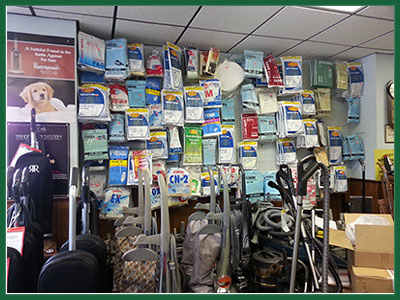

Our Services
At Womack Vacuum, we sell parts such as belts, bags and shampoo (and more). We keep a wide range of replacement belts and bags for nearly every brand. Click "More information" below to learn more.
A family Company
Womack Vacuum has been in business since 1968. We specialize in service and maintinece of any brand of vacuum.
Womack Vacuum is the leading vacuum dealer/distributor in Joplin and it's surrounding areas for many years.
For many years Kirby has been one of the most notible vacuum brands due to their durability and practicality. However, if you decide to choose another brand, Ricarr Vacuum Company makes some great machines that are a little easier on your pocketbook. Stop by and give these new Riccars a test drive. You'll love them!
At Womack Vacuum, we sell parts such as belts, bags and shampoo (and more). We keep a wide range of replacement belts and bags for nearly every brand. Click "More information" below to learn more.
Our two main new vacuum brands are Kirby and Riccar. However, we do offer many brands of new machines. Click "New and Used Vacuums" below to learn more.